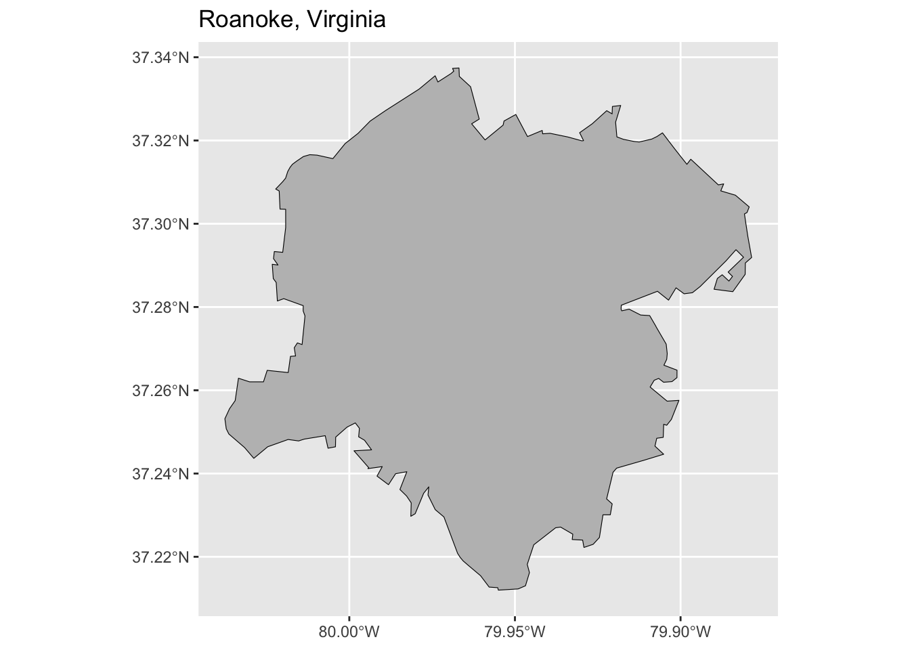

Teaching Segregation
Home
Lesson 1: Covenants
Lesson 2: Redlining
Lesson 3: Urban Renewal
Resources
Lesson 1: Covenants
<p><strong>Here would go a map showing racially restrictive covenants that I will have identified through research at the deeds office in Roanoke</strong></p> <div class="cell"> <div class="sourceCode" id="cb1"><pre class="sourceCode r cell-code"><code class="sourceCode r"><span id="cb1-1"><a href="#cb1-1" aria-hidden="true" tabindex="-1"></a><span class="fu">library</span>(sf)</span></code></pre></div> <div class="cell-output cell-output-stderr"> <pre><code>Linking to GEOS 3.13.0, GDAL 3.8.5, PROJ 9.5.1; sf_use_s2() is TRUE</code></pre> </div> <div class="sourceCode" id="cb3"><pre class="sourceCode r cell-code"><code class="sourceCode r"><span id="cb3-1"><a href="#cb3-1" aria-hidden="true" tabindex="-1"></a><span class="fu">library</span>(tigris)</span></code></pre></div> <div class="cell-output cell-output-stderr"> <pre><code>To enable caching of data, set `options(tigris_use_cache = TRUE)` in your R script or .Rprofile.</code></pre> </div> <div class="sourceCode" id="cb5"><pre class="sourceCode r cell-code"><code class="sourceCode r"><span id="cb5-1"><a href="#cb5-1" aria-hidden="true" tabindex="-1"></a><span class="fu">library</span>(dplyr)</span></code></pre></div> <div class="cell-output cell-output-stderr"> <pre><code> Attaching package: 'dplyr'</code></pre> </div> <div class="cell-output cell-output-stderr"> <pre><code>The following objects are masked from 'package:stats': filter, lag</code></pre> </div> <div class="cell-output cell-output-stderr"> <pre><code>The following objects are masked from 'package:base': intersect, setdiff, setequal, union</code></pre> </div> <div class="sourceCode" id="cb9"><pre class="sourceCode r cell-code"><code class="sourceCode r"><span id="cb9-1"><a href="#cb9-1" aria-hidden="true" tabindex="-1"></a><span class="fu">options</span>(<span class="at">tigris_use_cache =</span> <span class="cn">TRUE</span>)</span> <span id="cb9-2"><a href="#cb9-2" aria-hidden="true" tabindex="-1"></a></span> <span id="cb9-3"><a href="#cb9-3" aria-hidden="true" tabindex="-1"></a>roanoke <span class="ot"><-</span> <span class="fu">places</span>(<span class="at">state =</span> <span class="st">"VA"</span>, <span class="at">cb =</span> <span class="cn">TRUE</span>) <span class="sc">%>%</span></span> <span id="cb9-4"><a href="#cb9-4" aria-hidden="true" tabindex="-1"></a> <span class="fu">filter</span>(<span class="fu">grepl</span>(<span class="st">"Roanoke"</span>, NAME))</span></code></pre></div> <div class="cell-output cell-output-stderr"> <pre><code>Retrieving data for the year 2024</code></pre> </div> </div> <div class="cell"> <div class="sourceCode" id="cb11"><pre class="sourceCode r cell-code"><code class="sourceCode r"><span id="cb11-1"><a href="#cb11-1" aria-hidden="true" tabindex="-1"></a><span class="fu">library</span>(ggplot2)</span> <span id="cb11-2"><a href="#cb11-2" aria-hidden="true" tabindex="-1"></a></span> <span id="cb11-3"><a href="#cb11-3" aria-hidden="true" tabindex="-1"></a><span class="fu">ggplot</span>(roanoke) <span class="sc">+</span></span> <span id="cb11-4"><a href="#cb11-4" aria-hidden="true" tabindex="-1"></a> <span class="fu">geom_sf</span>(<span class="at">fill =</span> <span class="st">"gray"</span>, <span class="at">color =</span> <span class="st">"black"</span>) <span class="sc">+</span></span> <span id="cb11-5"><a href="#cb11-5" aria-hidden="true" tabindex="-1"></a> <span class="fu">ggtitle</span>(<span class="st">"Roanoke, Virginia"</span>)</span></code></pre></div> <div class="cell-output-display"> <div> <figure> <p><p></p></p> </figure> </div> </div> </div> <div class="cell"> <div class="cell-output cell-output-stderr"> <pre><code>Warning: sf layer has inconsistent datum (+proj=longlat +datum=NAD83 +no_defs). Need '+proj=longlat +datum=WGS84'</code></pre> </div> <div class="cell-output-display"> <div class="leaflet html-widget html-fill-item" id="htmlwidget-beba33123d16121cc72c" style="width:100%;height:464px;"></div> <script type="application/json" data-for="htmlwidget-beba33123d16121cc72c">{"x":{"options":{"crs":{"crsClass":"L.CRS.EPSG3857","code":null,"proj4def":null,"projectedBounds":null,"options":{}}},"calls":[{"method":"addTiles","args":["https://{s}.tile.openstreetmap.org/{z}/{x}/{y}.png",null,null,{"minZoom":0,"maxZoom":18,"tileSize":256,"subdomains":"abc","errorTileUrl":"","tms":false,"noWrap":false,"zoomOffset":0,"zoomReverse":false,"opacity":1,"zIndex":1,"detectRetina":false,"attribution":"© <a href=\"https://openstreetmap.org/copyright/\">OpenStreetMap<\/a>, <a href=\"https://opendatacommons.org/licenses/odbl/\">ODbL<\/a>"}]},{"method":"addPolygons","args":[[[[{"lng":[-80.037564,-80.03616700000001,-80.03445499999999,-80.033464,-80.030108,-80.025914,-80.024788,-80.018446,-80.017754,-80.01622500000001,-80.01661900000001,-80.015672,-80.014253,-80.01338199999999,-80.01392199999999,-80.01391599999999,-80.01978200000001,-80.02171300000001,-80.022071,-80.02294999999999,-80.023263,-80.02152700000001,-80.022881,-80.02263600000001,-80.02010300000001,-80.019215,-80.01920800000001,-80.01921299999999,-80.020917,-80.021165,-80.022226,-80.020104,-80.01922999999999,-80.01857800000001,-80.017876,-80.017173,-80.015941,-80.013848,-80.011906,-80.009722,-80.00496099999999,-80.001256,-79.99733000000001,-79.993696,-79.991203,-79.98902099999999,-79.978919,-79.97408299999999,-79.97326200000001,-79.96927700000001,-79.96888,-79.968464,-79.96861800000001,-79.968835,-79.966892,-79.966784,-79.96339500000001,-79.96078,-79.96307,-79.959013,-79.953568,-79.953295,-79.94973400000001,-79.946206,-79.94176299999999,-79.941636,-79.93939,-79.934026,-79.929771,-79.929288,-79.93046699999999,-79.92663400000001,-79.92229399999999,-79.920666,-79.920574,-79.918066,-79.91961000000001,-79.919223,-79.917213,-79.914006,-79.912493,-79.90871,-79.907117,-79.90546000000001,-79.90174399999999,-79.89808499999999,-79.896919,-79.88859600000001,-79.886983,-79.887867,-79.883443,-79.879276,-79.879937,-79.880718,-79.879723,-79.87855,-79.880444,-79.880498,-79.884236,-79.88988500000001,-79.88889500000001,-79.887434,-79.885401,-79.884319,-79.885644,-79.880985,-79.883273,-79.886287,-79.894094,-79.89642499999999,-79.89892999999999,-79.900283,-79.90136699999999,-79.90362399999999,-79.906975,-79.917889,-79.917959,-79.917771,-79.915519,-79.912052,-79.909328,-79.907422,-79.907393,-79.904338,-79.904022,-79.904179,-79.904886,-79.90503200000001,-79.901071,-79.90108600000001,-79.902584,-79.905119,-79.906609,-79.907955,-79.90919,-79.904055,-79.900492,-79.90278000000001,-79.904178,-79.905096,-79.905231,-79.90719,-79.907731,-79.905097,-79.911072,-79.919301,-79.920378,-79.92232199999999,-79.92063899999999,-79.92121299999999,-79.923423,-79.924496,-79.92637999999999,-79.929166,-79.92956,-79.932711,-79.932535,-79.936217,-79.93770499999999,-79.94431400000001,-79.946282,-79.945616,-79.946817,-79.949034,-79.955005,-79.95519299999999,-79.957781,-79.960369,-79.963939,-79.965615,-79.966532,-79.96731699999999,-79.97143699999999,-79.973967,-79.974073,-79.976246,-79.976005,-79.977552,-79.98011099999999,-79.98142900000001,-79.981315,-79.982709,-79.98472099999999,-79.982631,-79.98602099999999,-79.988175,-79.991636,-79.99005200000001,-79.994392,-79.994117,-79.998588,-79.99328,-79.995403,-79.997185,-79.996944,-79.99819100000001,-80.00070700000001,-80.00411200000001,-80.00417899999999,-80.006426,-80.007277,-80.013558,-80.01406799999999,-80.01530200000001,-80.018472,-80.02463400000001,-80.02883,-80.031609,-80.036366,-80.03714600000001,-80.037564],"lat":[37.253156,37.255558,37.257517,37.26289,37.262026,37.262025,37.264784,37.264254,37.268158,37.268234,37.27022,37.271379,37.270984,37.277853,37.279047,37.280327,37.282004,37.281444,37.285893,37.286832,37.290266,37.290089,37.291613,37.293328,37.293135,37.299034,37.299157,37.303477,37.303514,37.30787,37.308338,37.310107,37.310959,37.312561,37.313566,37.314281,37.315016,37.316153,37.316591,37.316479,37.315644,37.319264,37.32173,37.324672,37.326027,37.327208,37.332353,37.33555,37.334055,37.336087,37.336375,37.336641,37.336917,37.337313,37.337421,37.335396,37.332916,37.325141,37.32401,37.320139,37.323693,37.324679,37.326254,37.320945,37.322412,37.321607,37.321727,37.320846,37.319918,37.319974,37.321871,37.324037,37.32716,37.3264,37.328176,37.328414,37.324411,37.320866,37.320275,37.319766,37.319643,37.320339,37.32096,37.321835,37.317957,37.314278,37.3155,37.30934,37.309574,37.3079,37.306861,37.304047,37.302698,37.302358,37.297104,37.29189,37.290579,37.287843,37.283686,37.284269,37.286852,37.287749,37.286233,37.287344,37.288396,37.291954,37.293765,37.291078,37.284912,37.283436,37.283172,37.283964,37.284604,37.281651,37.283779,37.28043,37.279503,37.27909,37.279479,37.278078,37.277946,37.275336,37.275258,37.271087,37.268789,37.267438,37.266259,37.266023,37.264831,37.263039,37.262086,37.261927,37.26284,37.262407,37.260776,37.257388,37.257573,37.252995,37.251593,37.251825,37.248691,37.248472,37.246583,37.244633,37.243183,37.241295,37.240304,37.2339,37.232713,37.230085,37.230085,37.224634,37.223001,37.222245,37.224011,37.224146,37.225429,37.227136,37.226976,37.222878,37.218171,37.216205,37.213037,37.212279,37.211988,37.212579,37.21272,37.215448,37.217843,37.21899,37.219848,37.220839,37.229567,37.231265,37.231346,37.234837,37.236799,37.235264,37.230351,37.229726,37.232949,37.234599,37.236164,37.240432,37.239952,37.237319,37.239386,37.24166,37.241179,37.241383,37.245458,37.24569,37.247991,37.248825,37.250868,37.252158,37.251131,37.248748,37.24642,37.246082,37.24909,37.248273,37.248151,37.24783,37.248174,37.246428,37.24365,37.246235,37.249498,37.250754,37.253156]}]]],null,null,{"interactive":true,"className":"","stroke":true,"color":"black","weight":1,"opacity":0.5,"fill":true,"fillColor":"gray","fillOpacity":0.3,"smoothFactor":1,"noClip":false},null,null,null,{"interactive":false,"permanent":false,"direction":"auto","opacity":1,"offset":[0,0],"textsize":"10px","textOnly":false,"className":"","sticky":true},null]}],"limits":{"lat":[37.211988,37.337421],"lng":[-80.037564,-79.87855]},"setView":[[37.271,-79.9414],11,[]]},"evals":[],"jsHooks":[]}</script> </div> </div> <div id="quarto-navigation-envelope" class="hidden"> <p><span class="hidden quarto-markdown-envelope-contents" data-render-id="cXVhcnRvLWludC1zaWRlYmFyLXRpdGxl">Teaching Segregation</span> <span class="hidden quarto-markdown-envelope-contents" data-render-id="cXVhcnRvLWludC1uYXZiYXItdGl0bGU=">Teaching Segregation</span> <span class="hidden quarto-markdown-envelope-contents" data-render-id="cXVhcnRvLWludC1uYXZiYXI6SG9tZQ==">Home</span> <span class="hidden quarto-markdown-envelope-contents" data-render-id="cXVhcnRvLWludC1uYXZiYXI6L2luZGV4Lmh0bWw=">/index.html</span> <span class="hidden quarto-markdown-envelope-contents" data-render-id="cXVhcnRvLWludC1uYXZiYXI6TGVzc29uIDE6IENvdmVuYW50cw==">Lesson 1: Covenants</span> <span class="hidden quarto-markdown-envelope-contents" data-render-id="cXVhcnRvLWludC1uYXZiYXI6L2NvdmVuYW50cy5odG1s">/covenants.html</span> <span class="hidden quarto-markdown-envelope-contents" data-render-id="cXVhcnRvLWludC1uYXZiYXI6TGVzc29uIDI6IFJlZGxpbmluZw==">Lesson 2: Redlining</span> <span class="hidden quarto-markdown-envelope-contents" data-render-id="cXVhcnRvLWludC1uYXZiYXI6L3JlZGxpbmluZy5odG1s">/redlining.html</span> <span class="hidden quarto-markdown-envelope-contents" data-render-id="cXVhcnRvLWludC1uYXZiYXI6TGVzc29uIDM6IFVyYmFuIFJlbmV3YWw=">Lesson 3: Urban Renewal</span> <span class="hidden quarto-markdown-envelope-contents" data-render-id="cXVhcnRvLWludC1uYXZiYXI6L3VyYmFucmVuZXdhbC5odG1s">/urbanrenewal.html</span> <span class="hidden quarto-markdown-envelope-contents" data-render-id="cXVhcnRvLWludC1uYXZiYXI6UmVzb3VyY2Vz">Resources</span> <span class="hidden quarto-markdown-envelope-contents" data-render-id="cXVhcnRvLWludC1uYXZiYXI6L3Jlc291cmNlcy5odG1s">/resources.html</span></p> </div> <div id="quarto-meta-markdown" class="hidden"> <p><span class="hidden quarto-markdown-envelope-contents" data-render-id="cXVhcnRvLW1ldGF0aXRsZQ==">Lesson 1: Covenants – Teaching Segregation</span> <span class="hidden quarto-markdown-envelope-contents" data-render-id="cXVhcnRvLXR3aXR0ZXJjYXJkdGl0bGU=">Lesson 1: Covenants – Teaching Segregation</span> <span class="hidden quarto-markdown-envelope-contents" data-render-id="cXVhcnRvLW9nY2FyZHRpdGxl">Lesson 1: Covenants – Teaching Segregation</span> <span class="hidden quarto-markdown-envelope-contents" data-render-id="cXVhcnRvLW1ldGFzaXRlbmFtZQ==">Teaching Segregation</span> <span class="hidden quarto-markdown-envelope-contents" data-render-id="cXVhcnRvLXR3aXR0ZXJjYXJkZGVzYw=="></span> <span class="hidden quarto-markdown-envelope-contents" data-render-id="cXVhcnRvLW9nY2FyZGRkZXNj"></span></p> </div> </main> <!-- /main --> <script id = "quarto-html-after-body" type="application/javascript"> window.document.addEventListener("DOMContentLoaded", function (event) { const icon = ""; const anchorJS = new window.AnchorJS(); anchorJS.options = { placement: 'right', icon: icon }; anchorJS.add('.anchored'); const isCodeAnnotation = (el) => { for (const clz of el.classList) { if (clz.startsWith('code-annotation-')) { return true; } } return false; } const onCopySuccess = function(e) { // button target const button = e.trigger; // don't keep focus button.blur(); // flash "checked" button.classList.add('code-copy-button-checked'); var currentTitle = button.getAttribute("title"); button.setAttribute("title", "Copied!"); let tooltip; if (window.bootstrap) { button.setAttribute("data-bs-toggle", "tooltip"); button.setAttribute("data-bs-placement", "left"); button.setAttribute("data-bs-title", "Copied!"); tooltip = new bootstrap.Tooltip(button, { trigger: "manual", customClass: "code-copy-button-tooltip", offset: [0, -8]}); tooltip.show(); } setTimeout(function() { if (tooltip) { tooltip.hide(); button.removeAttribute("data-bs-title"); button.removeAttribute("data-bs-toggle"); button.removeAttribute("data-bs-placement"); } button.setAttribute("title", currentTitle); button.classList.remove('code-copy-button-checked'); }, 1000); // clear code selection e.clearSelection(); } const getTextToCopy = function(trigger) { const outerScaffold = trigger.parentElement.cloneNode(true); const codeEl = outerScaffold.querySelector('code'); for (const childEl of codeEl.children) { if (isCodeAnnotation(childEl)) { childEl.remove(); } } return codeEl.innerText; } const clipboard = new window.ClipboardJS('.code-copy-button:not([data-in-quarto-modal])', { text: getTextToCopy }); clipboard.on('success', onCopySuccess); if (window.document.getElementById('quarto-embedded-source-code-modal')) { const clipboardModal = new window.ClipboardJS('.code-copy-button[data-in-quarto-modal]', { text: getTextToCopy, container: window.document.getElementById('quarto-embedded-source-code-modal') }); clipboardModal.on('success', onCopySuccess); } var localhostRegex = new RegExp(/^(?:http|https):\/\/localhost\:?[0-9]*\//); var mailtoRegex = new RegExp(/^mailto:/); var filterRegex = new RegExp("https:\/\/elliotsheehan\.github\.io\/teachingsegregation\/"); var isInternal = (href) => { return filterRegex.test(href) || localhostRegex.test(href) || mailtoRegex.test(href); } // Inspect non-navigation links and adorn them if external var links = window.document.querySelectorAll('a[href]:not(.nav-link):not(.navbar-brand):not(.toc-action):not(.sidebar-link):not(.sidebar-item-toggle):not(.pagination-link):not(.no-external):not([aria-hidden]):not(.dropdown-item):not(.quarto-navigation-tool):not(.about-link)'); for (var i=0; i<links.length; i++) { const link = links[i]; if (!isInternal(link.href)) { // undo the damage that might have been done by quarto-nav.js in the case of // links that we want to consider external if (link.dataset.originalHref !== undefined) { link.href = link.dataset.originalHref; } } } function tippyHover(el, contentFn, onTriggerFn, onUntriggerFn) { const config = { allowHTML: true, maxWidth: 500, delay: 100, arrow: false, appendTo: function(el) { return el.parentElement; }, interactive: true, interactiveBorder: 10, theme: 'quarto', placement: 'bottom-start', }; if (contentFn) { config.content = contentFn; } if (onTriggerFn) { config.onTrigger = onTriggerFn; } if (onUntriggerFn) { config.onUntrigger = onUntriggerFn; } window.tippy(el, config); } const noterefs = window.document.querySelectorAll('a[role="doc-noteref"]'); for (var i=0; i<noterefs.length; i++) { const ref = noterefs[i]; tippyHover(ref, function() { // use id or data attribute instead here let href = ref.getAttribute('data-footnote-href') || ref.getAttribute('href'); try { href = new URL(href).hash; } catch {} const id = href.replace(/^#\/?/, ""); const note = window.document.getElementById(id); if (note) { return note.innerHTML; } else { return ""; } }); } const xrefs = window.document.querySelectorAll('a.quarto-xref'); const processXRef = (id, note) => { // Strip column container classes const stripColumnClz = (el) => { el.classList.remove("page-full", "page-columns"); if (el.children) { for (const child of el.children) { stripColumnClz(child); } } } stripColumnClz(note) if (id === null || id.startsWith('sec-')) { // Special case sections, only their first couple elements const container = document.createElement("div"); if (note.children && note.children.length > 2) { container.appendChild(note.children[0].cloneNode(true)); for (let i = 1; i < note.children.length; i++) { const child = note.children[i]; if (child.tagName === "P" && child.innerText === "") { continue; } else { container.appendChild(child.cloneNode(true)); break; } } if (window.Quarto?.typesetMath) { window.Quarto.typesetMath(container); } return container.innerHTML } else { if (window.Quarto?.typesetMath) { window.Quarto.typesetMath(note); } return note.innerHTML; } } else { // Remove any anchor links if they are present const anchorLink = note.querySelector('a.anchorjs-link'); if (anchorLink) { anchorLink.remove(); } if (window.Quarto?.typesetMath) { window.Quarto.typesetMath(note); } if (note.classList.contains("callout")) { return note.outerHTML; } else { return note.innerHTML; } } } for (var i=0; i<xrefs.length; i++) { const xref = xrefs[i]; tippyHover(xref, undefined, function(instance) { instance.disable(); let url = xref.getAttribute('href'); let hash = undefined; if (url.startsWith('#')) { hash = url; } else { try { hash = new URL(url).hash; } catch {} } if (hash) { const id = hash.replace(/^#\/?/, ""); const note = window.document.getElementById(id); if (note !== null) { try { const html = processXRef(id, note.cloneNode(true)); instance.setContent(html); } finally { instance.enable(); instance.show(); } } else { // See if we can fetch this fetch(url.split('#')[0]) .then(res => res.text()) .then(html => { const parser = new DOMParser(); const htmlDoc = parser.parseFromString(html, "text/html"); const note = htmlDoc.getElementById(id); if (note !== null) { const html = processXRef(id, note); instance.setContent(html); } }).finally(() => { instance.enable(); instance.show(); }); } } else { // See if we can fetch a full url (with no hash to target) // This is a special case and we should probably do some content thinning / targeting fetch(url) .then(res => res.text()) .then(html => { const parser = new DOMParser(); const htmlDoc = parser.parseFromString(html, "text/html"); const note = htmlDoc.querySelector('main.content'); if (note !== null) { // This should only happen for chapter cross references // (since there is no id in the URL) // remove the first header if (note.children.length > 0 && note.children[0].tagName === "HEADER") { note.children[0].remove(); } const html = processXRef(null, note); instance.setContent(html); } }).finally(() => { instance.enable(); instance.show(); }); } }, function(instance) { }); } let selectedAnnoteEl; const selectorForAnnotation = ( cell, annotation) => { let cellAttr = 'data-code-cell="' + cell + '"'; let lineAttr = 'data-code-annotation="' + annotation + '"'; const selector = 'span[' + cellAttr + '][' + lineAttr + ']'; return selector; } const selectCodeLines = (annoteEl) => { const doc = window.document; const targetCell = annoteEl.getAttribute("data-target-cell"); const targetAnnotation = annoteEl.getAttribute("data-target-annotation"); const annoteSpan = window.document.querySelector(selectorForAnnotation(targetCell, targetAnnotation)); const lines = annoteSpan.getAttribute("data-code-lines").split(","); const lineIds = lines.map((line) => { return targetCell + "-" + line; }) let top = null; let height = null; let parent = null; if (lineIds.length > 0) { //compute the position of the single el (top and bottom and make a div) const el = window.document.getElementById(lineIds[0]); top = el.offsetTop; height = el.offsetHeight; parent = el.parentElement.parentElement; if (lineIds.length > 1) { const lastEl = window.document.getElementById(lineIds[lineIds.length - 1]); const bottom = lastEl.offsetTop + lastEl.offsetHeight; height = bottom - top; } if (top !== null && height !== null && parent !== null) { // cook up a div (if necessary) and position it let div = window.document.getElementById("code-annotation-line-highlight"); if (div === null) { div = window.document.createElement("div"); div.setAttribute("id", "code-annotation-line-highlight"); div.style.position = 'absolute'; parent.appendChild(div); } div.style.top = top - 2 + "px"; div.style.height = height + 4 + "px"; div.style.left = 0; let gutterDiv = window.document.getElementById("code-annotation-line-highlight-gutter"); if (gutterDiv === null) { gutterDiv = window.document.createElement("div"); gutterDiv.setAttribute("id", "code-annotation-line-highlight-gutter"); gutterDiv.style.position = 'absolute'; const codeCell = window.document.getElementById(targetCell); const gutter = codeCell.querySelector('.code-annotation-gutter'); gutter.appendChild(gutterDiv); } gutterDiv.style.top = top - 2 + "px"; gutterDiv.style.height = height + 4 + "px"; } selectedAnnoteEl = annoteEl; } }; const unselectCodeLines = () => { const elementsIds = ["code-annotation-line-highlight", "code-annotation-line-highlight-gutter"]; elementsIds.forEach((elId) => { const div = window.document.getElementById(elId); if (div) { div.remove(); } }); selectedAnnoteEl = undefined; }; // Handle positioning of the toggle window.addEventListener( "resize", throttle(() => { elRect = undefined; if (selectedAnnoteEl) { selectCodeLines(selectedAnnoteEl); } }, 10) ); function throttle(fn, ms) { let throttle = false; let timer; return (...args) => { if(!throttle) { // first call gets through fn.apply(this, args); throttle = true; } else { // all the others get throttled if(timer) clearTimeout(timer); // cancel #2 timer = setTimeout(() => { fn.apply(this, args); timer = throttle = false; }, ms); } }; } // Attach click handler to the DT const annoteDls = window.document.querySelectorAll('dt[data-target-cell]'); for (const annoteDlNode of annoteDls) { annoteDlNode.addEventListener('click', (event) => { const clickedEl = event.target; if (clickedEl !== selectedAnnoteEl) { unselectCodeLines(); const activeEl = window.document.querySelector('dt[data-target-cell].code-annotation-active'); if (activeEl) { activeEl.classList.remove('code-annotation-active'); } selectCodeLines(clickedEl); clickedEl.classList.add('code-annotation-active'); } else { // Unselect the line unselectCodeLines(); clickedEl.classList.remove('code-annotation-active'); } }); } const findCites = (el) => { const parentEl = el.parentElement; if (parentEl) { const cites = parentEl.dataset.cites; if (cites) { return { el, cites: cites.split(' ') }; } else { return findCites(el.parentElement) } } else { return undefined; } }; var bibliorefs = window.document.querySelectorAll('a[role="doc-biblioref"]'); for (var i=0; i<bibliorefs.length; i++) { const ref = bibliorefs[i]; const citeInfo = findCites(ref); if (citeInfo) { tippyHover(citeInfo.el, function() { var popup = window.document.createElement('div'); citeInfo.cites.forEach(function(cite) { var citeDiv = window.document.createElement('div'); citeDiv.classList.add('hanging-indent'); citeDiv.classList.add('csl-entry'); var biblioDiv = window.document.getElementById('ref-' + cite); if (biblioDiv) { citeDiv.innerHTML = biblioDiv.innerHTML; } popup.appendChild(citeDiv); }); return popup.innerHTML; }); } } }); </script> </div> <!-- /content --> </body> </html>